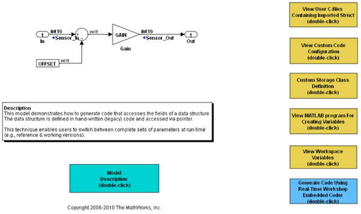

Import Externally Defined Parameters Into Simulink®
This model demonstrates how to generate code that accesses the fields of a data structure. The data structure is defined in legacy (hand-written) code and accessed via pointer.
This technique enables users to easily switch between complete sets of parameters at run-time (e.g., reference & working versions).
